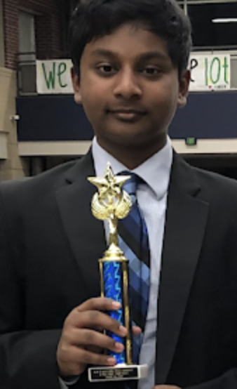
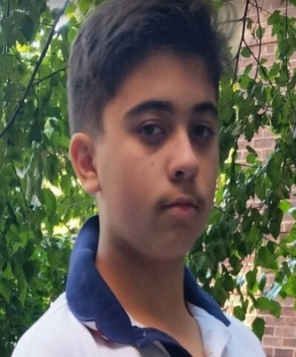

About Us
Who's the team behind it all?
Lishore Kumar, Creator and Director of the Quarantine Classic
In an effort to assist debaters who had their entire debate season shut down, Lishore Kumar created the Quarantine Classic weeks after the start of the national lockdown. That being said, it very quickly blossomed into something beyond that. Looking at it as an opportunity to ‘change the game’, he assembled a team and got to work. Gaining sponsorships and grants from numerous foundations, Lishore continues to seek ever-increasing success for the tournament.
Lishore joined the world of debate in the 7th grade after hearing about an ‘Expressive way to talk about current world issues’. Under the tutelage of coach Stan Magee, he quickly plowed his way to something beyond simply competing. Writing cases, judging tournaments, and creating tournaments are just some of the things that Lishore did in his debate career. And in Lishore’s own words:
"I didn’t create the Quarantine Classic for people to JUST debate. I created it so that they can look at debate beyond two people arguing. Beyond confining yourself to use the most well-known techniques. Beyond an extracurricular activity. I created the Quarantine Classic to let people realize the intrinsic and real-life value of debating."
Dan Viderman, Co-Director of Tournament Logistics and Website Developer
I first started debate when I was in the 7th grade. Weirdly enough, one of the things I distinctly remember was how unprepared I was for my first tournament. Like a slap in the face, I remember what it felt like to be in a position where I lost nearly every round. That being said, I wouldn’t trade that experience for anything.
After feeling the fire that debating about a topic gave me, I realized that there truly was a strategic route to argumentation. Pushing through self-defined barriers, I quickly found myself competing on progressively bigger stages. And no matter what, it was never the win of a round that provided me joy, it was the proverbial feeling of having a strategic plan fall into place.
I joined the Quarantine Classic in its first year after I saw its mission to provide a place for debaters to prepare for their upcoming season without any pesky issues. With our unprecedented growth and success, I truly hope that you consider competing or judging for the Quarantine Classic!